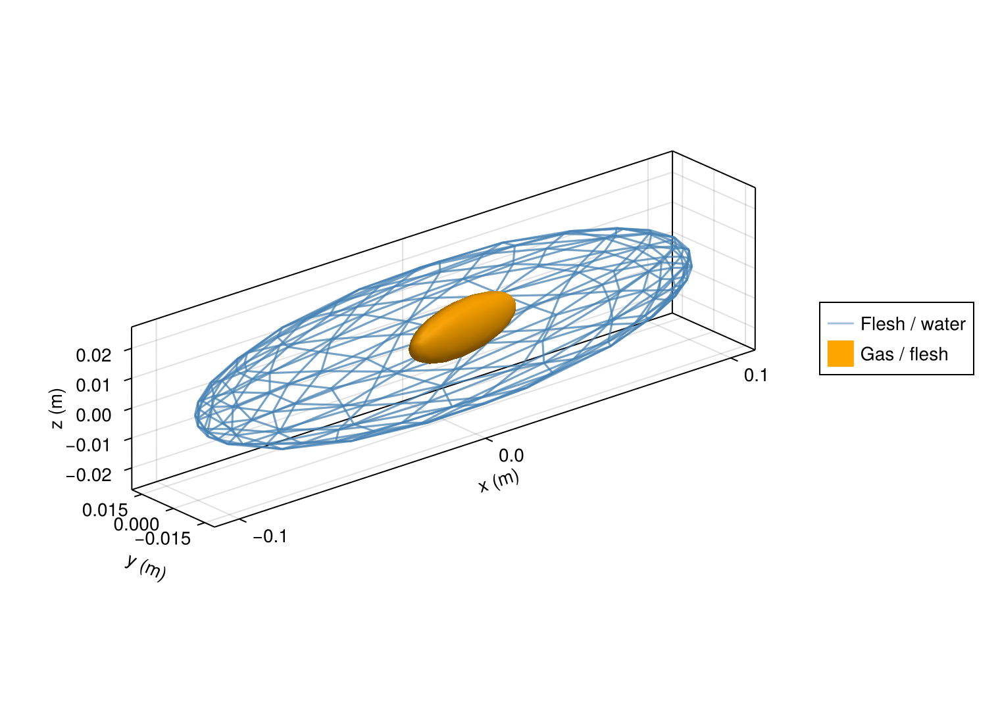
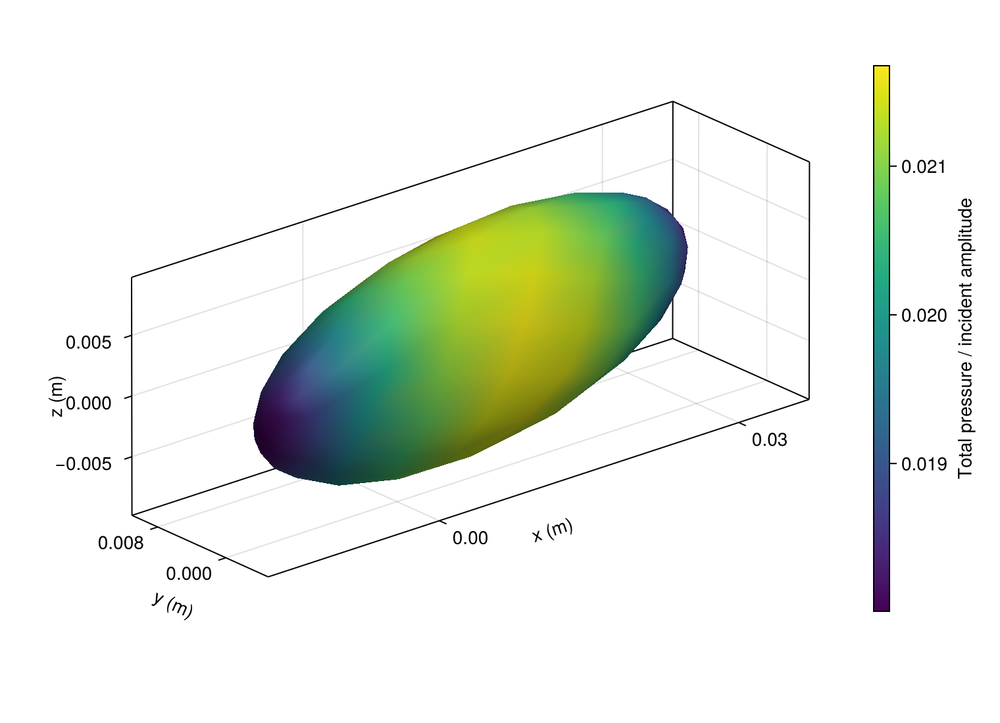
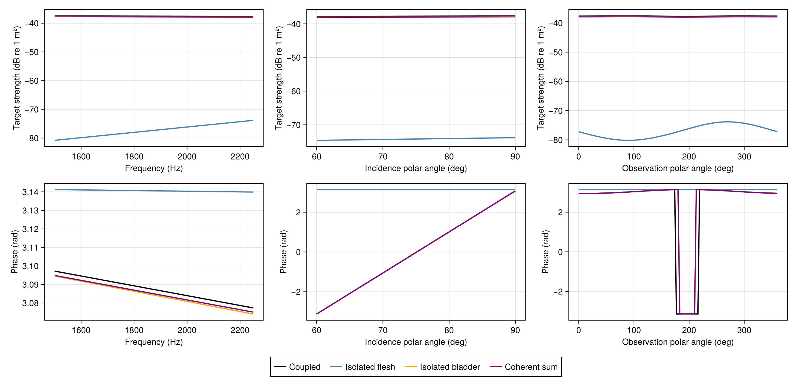

A synthetic fish and swimbladder
Model a finless body and a displaced, tilted gas bladder as two nested ellipsoids. This is a synthetic geometry, with no segmentation or smoothing and no measured specimen.
| Surface | Semiaxes (x,y,z) in meters | Centre in meters | Rotation about +z |
|---|---|---|---|
| Flesh | (0.100,0.018,0.025) | (0,0,0) | 0° |
| Bladder | (0.025,0.006,0.009) | (0.010,0.003,0) | 10° |
Water has sound speed 1477.4 m/s and density 1026.8 kg/m³. Flesh/water density and sound-speed ratios are both 1.04, while gas/water ratios are 0.00129 and 0.23. These material values follow Table 1 of Gonzalez et al. (2020). All media are homogeneous, lossless fluids and the bladder wall has no elastic stiffness.
Construct and solve
using AcousticScattering
using CairoMakie: plot, save
function fish_surfaces(; resolution=0.4, qorder=5)
options = (; resolution, qorder, tip_ratio=0.4)
return [mesh(; semiaxes=(0.100,0.018,0.025), options...),
mesh(; semiaxes=(0.025,0.006,0.009), center=(0.010,0.003,0),
rotation=(axis=(0,0,1), angle=deg2rad(10)), options...)]
end
surfaces = fish_surfaces()
materials = [FluidFilled(1.04,1.04), GasFilled(0.00129,0.23)]
sound_speed = 1477.4
k = 2pi * 2250 / sound_speed
solution = bem(surfaces, materials, k; parents=[0,1], incidence_angle=pi/2)
target_strength(solution)-37.88780582080883Region 0 is exterior water, region 1 flesh and region 2 gas. parents=[0,1] places flesh in water and gas in flesh. All material contrasts refer to exterior water. Incidence is along +y, broadside to the long x axis. z measures height/depth.
mesh generates cubic triangles by default. resolution is the dimensionless edge size on the unit sphere before stretching. tip_ratio=0.4 refines its local x poles. Physical edge sizes depend on stretching. qorder controls quadrature independently.
View geometry and pressure
geometry = plot(solution; kind=:mesh,
wireframe_interfaces=[1], interface_colors=[(:steelblue,0.5), :orange],
interface_labels=["Flesh / water", "Gas / flesh"])
pressure = plot(solution; kind=:surface_field, interfaces=[2])
save("fish_geometry.png", geometry)
save("fish_pressure.png", pressure)

The complete flesh surface is drawn as a mesh grid with alpha 0.5, so the bladder remains visible inside its body envelope. interfaces=[2] selects the bladder. Omit it for all interfaces. field=:pressure_phase, :pressure_real and :pressure_imag select other pressure views. The colourbar is automatic.
These displays use corner triangles and vertex-averaged complex pressure. The solve retains curved elements and quadrature-node traces. Phase is taken after complex averaging.
Compare coupled and isolated responses
components(solution) reuses the coupled solution and solves each interface alone in exterior water, preserving its position, material, incidence and phase origin. The coherent sum adds the isolated complex amplitudes, omitting their mutual interactions. Adding target strengths in dB would lose phase.
compare(k; beta=pi/2) = components(
bem(surfaces, materials, k; parents=[0,1], incidence_angle=beta);
labels=["flesh", "bladder"])
spectrum = frequency_sweep(compare, [1500.0,2250.0], sound_speed)
aspect = incidence_angle_sweep(surfaces, materials, k, deg2rad.([60,90]);
parents=[0,1], components=true, labels=["flesh", "bladder"])
pattern = bistatic_sweep(components(solution; labels=["flesh", "bladder"]),
range(0,2pi; length=121))
comparison = plot(spectrum, aspect, pattern)
save("fish_comparison.png", comparison)
Each sweep stores amplitudes, target_strength and labels. Rows are samples, while columns are coupled, isolated flesh, isolated bladder and coherent sum. Single-model sweeps instead contain vectors. Plot saved results with plot(spectrum; quantity=:phase) or :target_strength, :magnitude, :real or :imag without solving again.
The mesh-based incidence sweep assembles and factorizes each fixed-frequency system once for all angles. It samples the coupled and isolated systems separately to limit matrix storage. Only the resulting amplitudes and strengths are retained.
Frequency and incidence sweeps measure backscatter, opposite each incident direction. Incidence polar angles are measured from +x with azimuth zero. The observation cut holds incidence along +y and sweeps the xy plane from +x toward +y: 90° is forward and 270° backward.
Amplitudes are meters for a unit incident plane wave, using a common origin and exp(-im*omega*t). Phase is wrapped to [-pi,pi] while endpoint jumps are wrapping. Use angle(a/b) for a phase difference between amplitudes.
Check numerical convergence
For the 500 Hz gas-inclusion case, check the transmission solution with independent mesh and quadrature refinements:
low = bem(surfaces, materials, 2pi * 500 / sound_speed; parents = [0, 1])
target_strength(low)-33.41997878290374The default Müller formulation combines pressure and normal-derivative equations. An explicit formulation=:cbie selects pressure equations alone. These conventional equations can have fictitious eigenfrequencies. A successful check at one frequency does not establish accuracy through resonance. See Boundary methods for formulation choices.
Two frequency samples do not resolve the bladder's low-frequency resonance. A resonance study needs its own frequency sampling and independent mesh/quadrature refinement. The settings above establish neither resonance accuracy nor a bound at all observation angles.
For example, compare a finer mesh at the same frequency and incidence:
refined = bem(fish_surfaces(; resolution=0.38), materials, k; parents=[0,1])
a, b = scattering_amplitude(solution), scattering_amplitude(refined)
(; change_db=abs(target_strength(a)-target_strength(b)),
relative_amplitude_change=abs(a-b)/abs(b))(change_db = 0.004457772914733482, relative_amplitude_change = 0.0005185601692003247)Repeat with fish_surfaces(; qorder=7) to refine quadrature independently, and at each frequency, incidence and observation direction of interest. Require changes below 0.1 dB and 1% complex amplitude for this example. Check the isolated solutions too when interpreting small component differences, and sample near scattering nulls. Run dense refinements sequentially. Allow at least 16 GB RAM.
These changes measure numerical convergence, not physical-model error. A measured fish calculation also needs both registered surfaces, units, segmentation and smoothing records. Synthetic ellipsoids cannot recover the published CT anatomy.